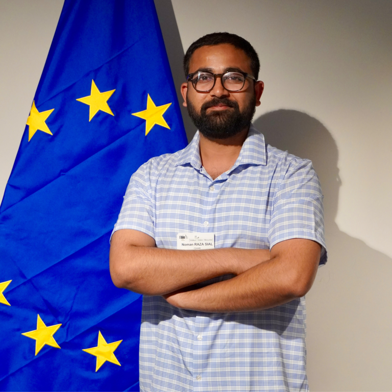

Better fuels.
Lower impact.
A cleaner horizon.
I’m Noman. I study how sustainable fuels can move us forward — connecting process engineering, environmental economics, and real-world energy systems.

to meaningful change.
Evidence, with impact.
Research records and citation metrics,
with their sources kept in view.
About these metrics & data sources
Publication records come from the public ORCID record and the ORCID-linked OpenAlex profile, supplemented by Google Scholar when connected. Matching records are combined; ORCID dates take precedence when supplied. Citation counts, h-index and i10-index depend on the provider and can differ. A dash means the value is unavailable, never zero. “Recent” means the window reported by Google Scholar. Cached values retain their last successful retrieval date.
Systems thinking.
Practical possibilities.
From emerging fuel pathways to the infrastructure that makes them possible.
Ideas into evidence.
This list reflects the connected public records; unpublished and private work may not appear. Bibliographic dates follow the source record.
Different places.
A shared purpose.
Building a systems perspective across research, industry, and continents.
Education
PhD · Environmental Economics
UHasselt · 2026–2030 (expected)
MEng · Chemical Engineering
Yeungnam University · 2021–2023
BE · Chemical Engineering
University of the Punjab · 2014–2018
The evolving fuel landscape.
Global sustainable aviation fuel news and EU policy developments, from named sources.
Sources & update status
Only articles hosted by approved publishers are included. Policy pages are checked for content changes; a page change does not itself mean a law has changed. RED is the EU Renewable Energy Directive; CORSIA is an ICAO scheme.
Notes along the way.
Good questions.
Better collaborations.
Working on sustainable fuels, hydrogen, Power-to-X, or future energy systems? Let’s exchange ideas.
Get in touch ↗engr.nomanrazasial@gmail.com